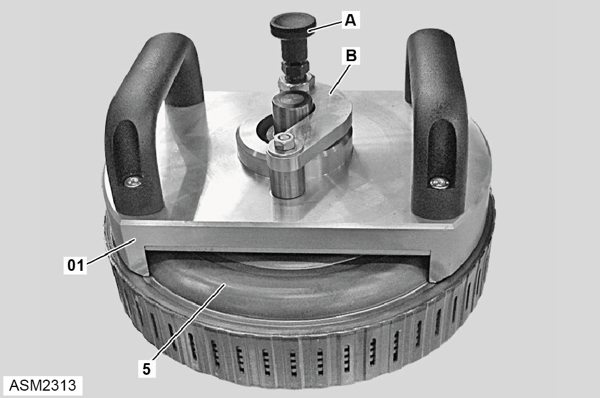
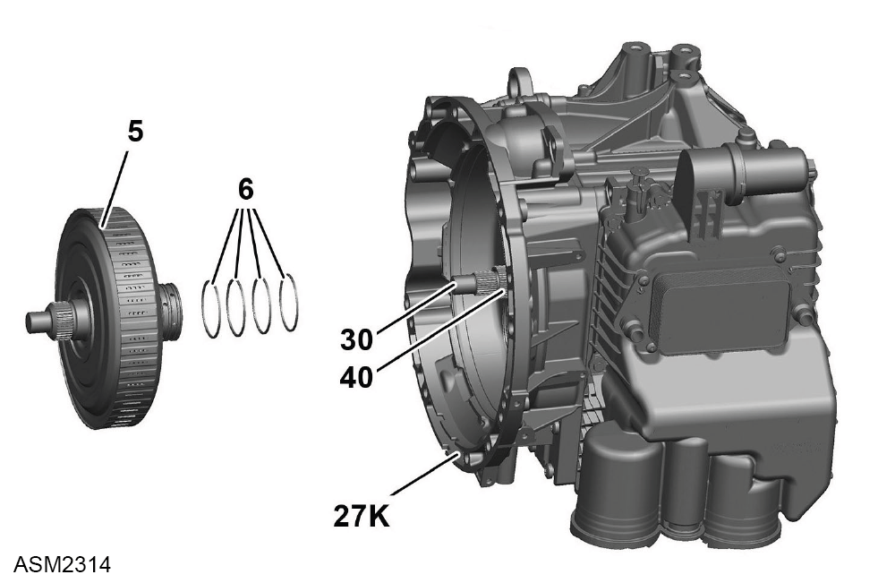

Dual Clutch - 4 Cylinder
Print
Operation Code: 47.02.20-02
Important Information
 WARNING: Transmission oil is a toxic substance and can be lethal if ingested. Wear protective gloves, protective clothing and safety glasses.
WARNING: Transmission oil is a toxic substance and can be lethal if ingested. Wear protective gloves, protective clothing and safety glasses.
Removal
- Remove dual clutch axial bearing. Refer to procedure.

- Pull locking pin (A) upwards.
- Fully open lever (B).
- Install assembly tool (01) onto dual clutch (5).
- Pull locking pin upwards again.
- Close lever and latch locking pin into assembly tool.

- Remove dual clutch (5) from clutch housing (27K) using assembly tool.
NOTE: Discard sealing rings (6).
Installation
- Installation is the reverse of removal procedure except for the following:
NOTE: Renew sealing rings.
NOTE: Ensure sealing rings are correctly seated.
- Install dual clutch into clutch housing carefully and without tilting using assembly tool.
- Rotate dual clutch (5) slightly until toothing of drive shaft (30) and hollow shaft (40) engages correctly in the dual clutch.
- Remove assembly tool from dual clutch.
- Measure installed dimension of dual clutch and adjust if necessary.